Reyondan patrona,
tek uygulamada
sipariş.mesajlaşma.SKT takibi.denetim.kampanya.fiyat analizi.sevkiyat.
PERAMAR, marketinizde çalışan herkesi aynı sistemde buluşturur. Reyon sorumlusu yalnızca kendi bölümünü, şoför yalnızca kendi durağını, patron ise şirketin tamamını görür. WhatsApp grupları, kâğıt formlar ve Excel dosyaları geride kalır; ekip kendi aralarında da PERAMAR üzerinden konuşur.
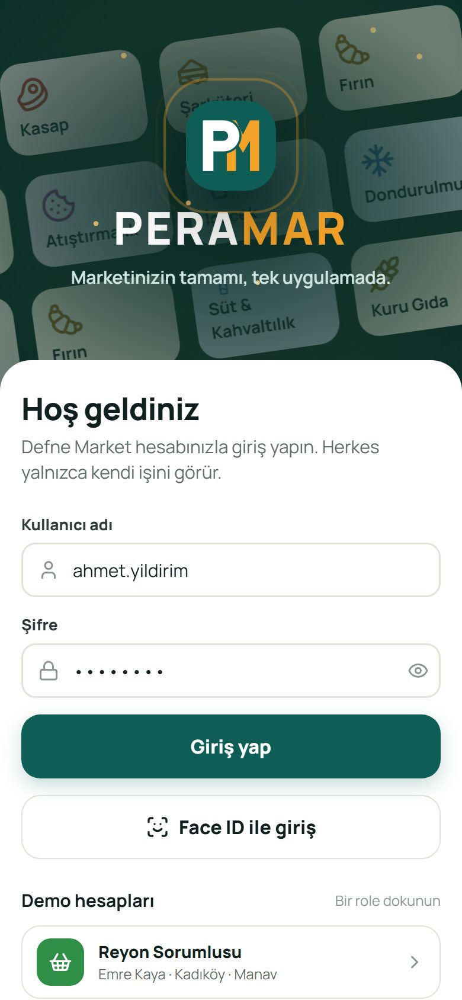
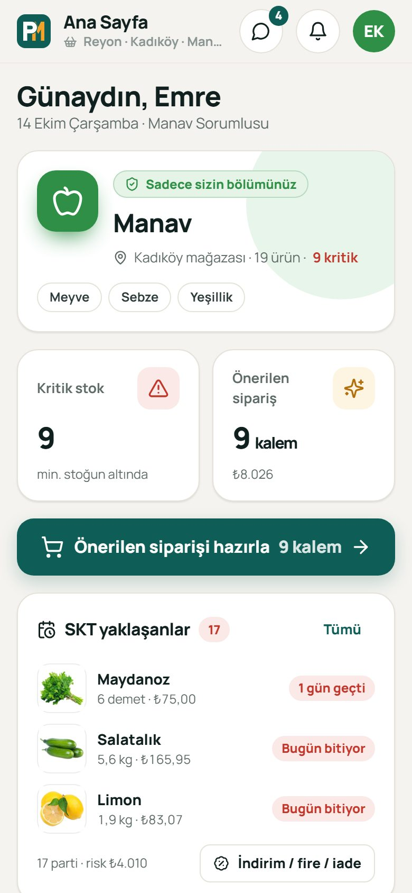
Reyon · Ana sayfa">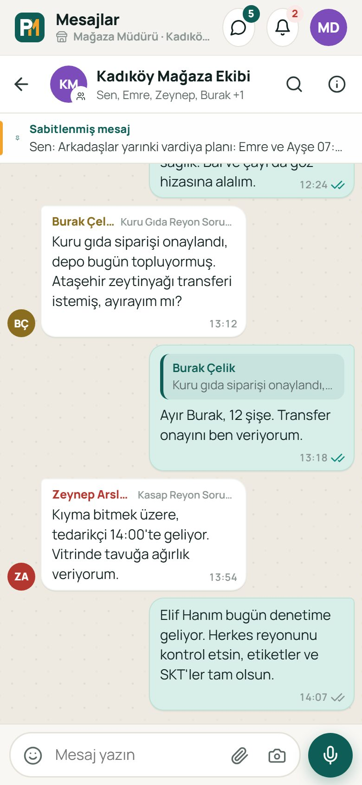
Mesajlar · Mağaza ekibi" loading="lazy">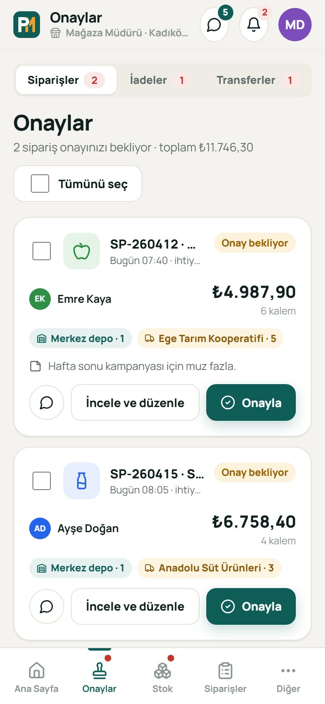
Mağaza müdürü · Onaylar" loading="lazy">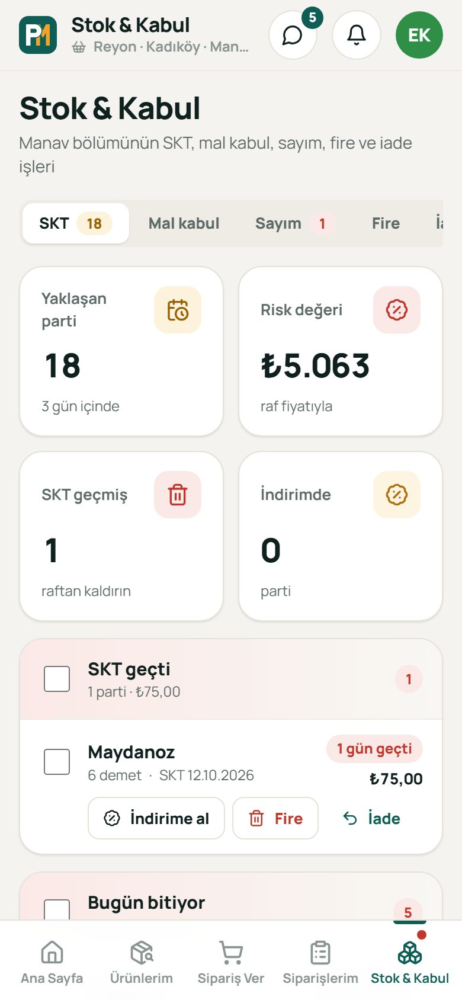
Reyon · SKT takibi" loading="lazy">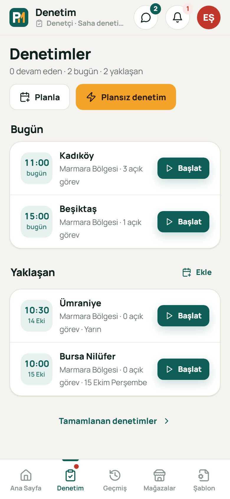
Denetçi · Denetim turu" loading="lazy">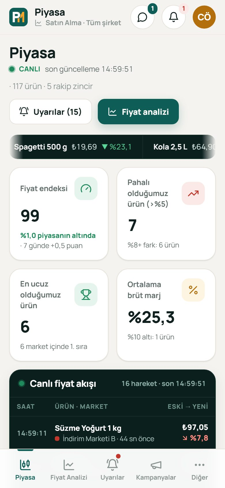
Satın alma · Canlı piyasa" loading="lazy">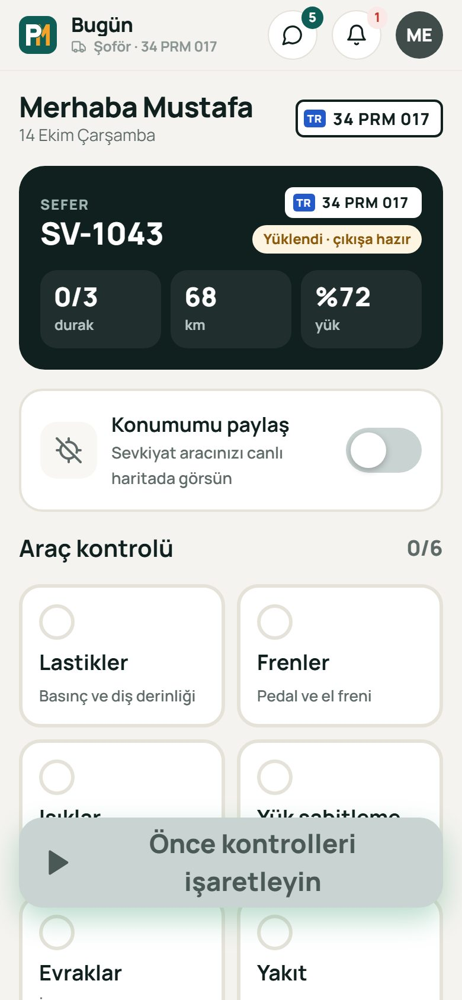
Şoför · Bugünkü rota" loading="lazy">Marketler bugün hâlâ telefon, kâğıt ve Excel ile yönetiliyor.
Siparişler WhatsApp grubunda kayboluyor, denetim formu çekmecede kalıyor, rakip fiyatı ancak haftalar sonra fark ediliyor. Düğmeye basın, PERAMAR ile nasıl değiştiğini görün.
WhatsApp'tan sipariş
Reyon, müdürü arar ya da gruba mesaj atar. Kim neyi, ne kadar istedi; onaylandı mı, kimse emin değil.
Kayıp ve tekrarAkıllı sipariş
Kritik stok otomatik çıkar, önerilen sipariş tek dokunuşla hazırlanır. Müdür onayı, depo ve tedarikçi ayrımı otomatik.
Her adım kayıtlıKâğıt denetim formu
Denetçi formu doldurur, fotoğraflar telefonda kalır. Eksikler kime, ne zaman iletildi bilinmez.
Takip yokDijital denetim turu
Puanlı sorular, zaman damgalı fotoğraf, müdür imzası. Her eksik otomatik olarak sorumlusuna görev olur.
Kanıtlı ve izlenebilirExcel'de fiyat takibi
Rakip fiyatları elle toplanır, tablo güncellenene kadar fırsat çoktan kaçmıştır.
Geç kalınırCanlı piyasa analizi
Rakip fiyatları tek ekranda, anlık uyarılarla. Marjınızı koruyan fiyat önerisi hazır gelir.
Anında kararTelefonla tır takibi
"Neredesin?" aramaları, el yazısı irsaliyeler, teslim edildi mi bilinmeyen koliler.
BelirsizlikUçtan uca sevkiyat
Hangi ürün hangi tıra, hangi tır hangi mağazaya. Şoför imza ve fotoğrafla teslim eder, herkes anında görür.
Şeffaf lojistikHerkes yalnızca kendi işini görür.
En alttaki reyon görevlisinden en üstteki patrona kadar 9 farklı rol, 9 farklı ekran. Kimse kalabalık menülerde kaybolmaz; herkes yalnızca işine yarayanı görür, yetkisi olmayanı göremez.
Yetkiler patron ekranından yönetilir: kim hangi mağazayı, hangi bölümü görür, tek dokunuşla belirlenir.
Bir siparişin yolculuğu, saniye saniye.
Reyonda verilen sipariş; müdür onayından depo toplamaya, tır yüklemesinden mağaza teslimine kadar zincirdeki herkesin ekranına kendiliğinden düşer. Kimse kimseyi aramaz.
WhatsApp gruplarına gerek kalmaz.
Mağaza ekibi, depo, sevkiyat ve şoförler PERAMAR içinde konuşur. Her sohbet işin kendisine bağlıdır: bir siparişin, seferin ya da görevin altında yazışılır; duyurular kimin okuduğuyla birlikte takip edilir. Konuşmalar şirkette kalır.
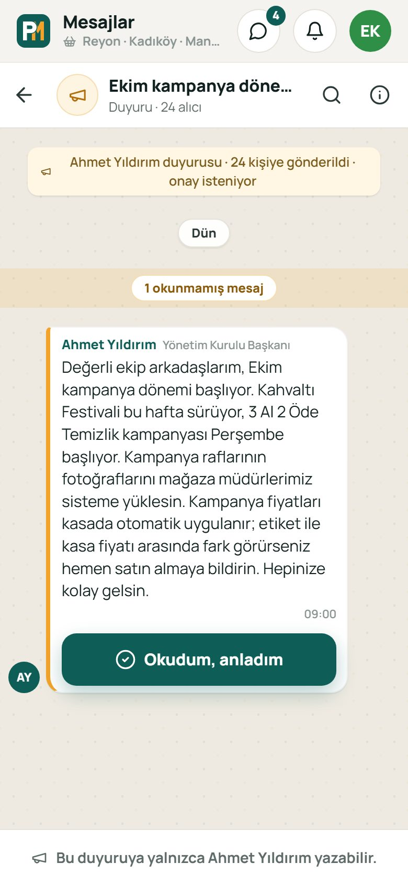
Sipariş, sefer, görev, transfer ya da iade üzerinden yazışın. Kartta durum canlı görünür, ilgili kişiler kendiliğinden eklenir.
Patron tüm şirkete, bölge müdürü bölgesine yazar. "Okudum, anladım" diyenler ve diyemeyenler tek ekranda.
Eli dolu çalışan basılı tutar, konuşur. Dalga formu, hızlandırma ve yazıya dökülmüş hali.
Raf fotoğrafı, hasarlı koli, tırın anlık konumu. Hepsi yazışmanın içinde, kanıt olarak.
İletildi ve okundu işaretleri, alıntılı yanıt, @bahsetme, sabitlenen mesaj, sohbet içinde arama.
Herkes yalnızca işi gereği konuşması gereken kişilere yazabilir. Şirket dışına bilgi çıkmaz.
Marketin her köşesi için ayrı bir uzman.
Her modül, o işi her gün yapan kişinin gözünden tasarlandı: büyük düğmeler, az adım, sıfır kafa karışıklığı.
Sipariş, reyonda 30 saniyede hazır.
Kritik stoktaki ürünler kendiliğinden listelenir. PERAMAR satış hızına göre siparişi önerir; reyon sorumlusu yalnızca kontrol edip gönderir. Sistem her kalemi merkez depo ya da tedarikçi olarak ayırır.
- Önerilen siparişMinimum stok ve satış hızına göre otomatik miktar.
- Barkodla eklemeRafta okut, sepete düşsün. Arama gerekmez.
- Onay zinciriMağaza müdürü onaylar, limiti aşan sipariş bölge onayına gider.
Kadıköy · ManavKesim 16:00
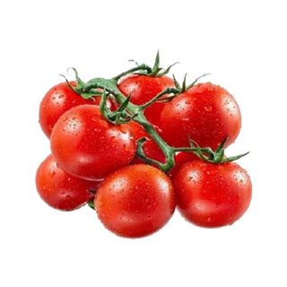
Domates (Salkım)TEDARİKÇİStok 4 / 35 kg−0+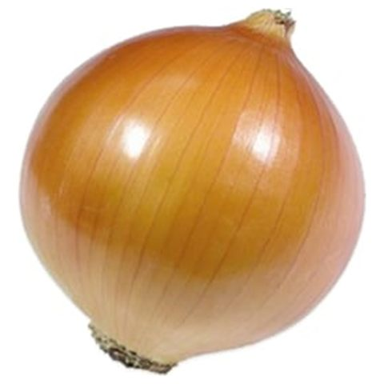
Kuru SoğanMERKEZStok 12 / 88 kg−0+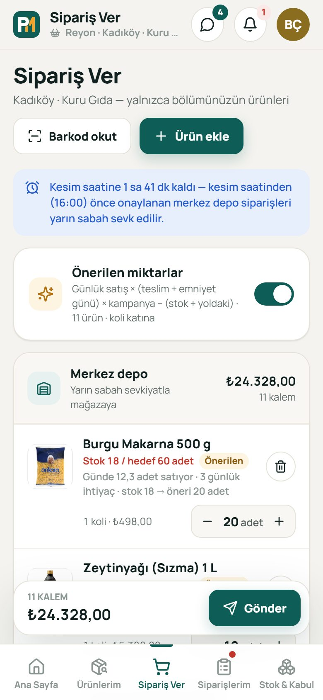
Denetim artık kanıtlı.
Denetçi mağazaya vardığında turu başlatır. Sorular tek tek puanlanır, olumsuz cevaplarda fotoğraf zorunludur. Tur bitince mağaza müdürü ekranda imzalar, rapor hazırdır.
- Zaman damgalı fotoğrafHer fotoğrafa tarih, saat ve mağaza bilgisi işlenir.
- Düzenlenebilir soru şablonuSorular, bölümler ve ağırlıklar merkezden değiştirilebilir.
- Otomatik düzeltme göreviHer eksik, son tarihiyle birlikte sorumlusuna görev olarak düşer.
Elif Şahin · 13 Ekim 10:42Konum doğrulandı
Rakip fiyatları canlı, kararınız anında.
Satın alma ekibi, Türkiye'nin önde gelen marketlerindeki fiyatları tek terminalde izler. Bir rakip fiyat düşürdüğünde ya da sizin fiyatınız pazarın üstüne çıktığında uyarı gelir. PERAMAR, marjınızı koruyan fiyatı önerir.
- Anlık karşılaştırmaHer ürün için piyasa ortalaması, en düşük fiyat ve konumunuz.
- Akıllı uyarılarFiyat düşüşü, pahalı kalma ve fırsat bildirimleri.
- Marj koruyan öneriAlış maliyetini ve hedef marjı dikkate alan fiyat önerisi.
- Fiyat tek dokunuşla zincirdeUygulanan fiyat tüm ekranlara yansır, her mağazaya raf etiketi görevi düşer.
- Kampanya sihirbazıMarj etkisini görerek kurun; mağazalara hazırlık görevi gider, performansı satış verisinden izleyin.
| Ürün | Bizim | Rakip A | Rakip B | Fark |
|---|
Görseldeki rakipler ve fiyatlar örnektir. Gerçek kullanımda fiyat verileri lisanslı ve kamuya açık kaynaklardan toplanır.
Rafta ne var, ne bozuluyor, ne eksik; hepsi kayıtlı.
Son kullanma tarihi, sayım, mal kabul, mağazalar arası transfer ve iade aynı sistemde. Fire gizli kalmaz, kayıp TL olarak patronun ekranına düşer.
SKT takibi
Tarihi yaklaşan partiler reyon sorumlusunun ana sayfasına düşer. Tek dokunuşla indirime alınır, fireye ya da iadeye gider.
Stok sayımı
Müdür planlar, reyon barkodla sayar, fark raporu TL olarak çıkar. Onaylanınca stok kendiliğinden düzelir.
Fotoğraflı mal kabul
Gelen, eksik ve hasarlı adet, SKT tarihi, plaka ve fotoğraf. Fark tedarikçi karnesine işlenir.
Mağazalar arası transfer
Bölgedeki diğer mağazaların stoğu görünür. Talep, onay, tıra yükleme ve mal kabul tek akışta.
İade ve alacak
Depoya iade tırla geri alınır, tedarikçi iadesinde satın alma alacak kaydını girer. Hiçbir koli kaybolmaz.
Telefon kamerası barkod okur
Ayrı el terminali gerekmez. Sipariş, sayım, toplama ve mal kabulde telefonla okutun; etiketler de PERAMAR'dan basılır.
Hangi ürün hangi tıra, hangi tır hangi mağazaya.
Depo raf adresine göre sıralı toplar, sevkiyat siparişleri tırlara kapasite ve soğuk zincir kuralına göre dağıtır, şoför yalnızca bugünkü duraklarını görür. Teslimat imza ve fotoğrafla kapanır.
Tır doluluk
Rota optimizasyonu
Durak sırası mesafe ve teslim saatine göre yeniden dizildi.
Kural uyarısı
Dondurulmuş ürün yalnızca frigo araca atanabilir. Kuru yük tırına atama engellendi.
Toplama · SP-260418
Raf adresine göre sıralı, okutarak toplama.
Ataşehir
Patron için tek bakışta bütün şirket.
Ciro, bekleyen onaylar, denetim puanları, geciken görevler ve yoldaki tırlar aynı kokpitte. Bölgeden mağazaya, mağazadan reyona inebilirsiniz. Masada bilgisayardan, sahada telefondan.
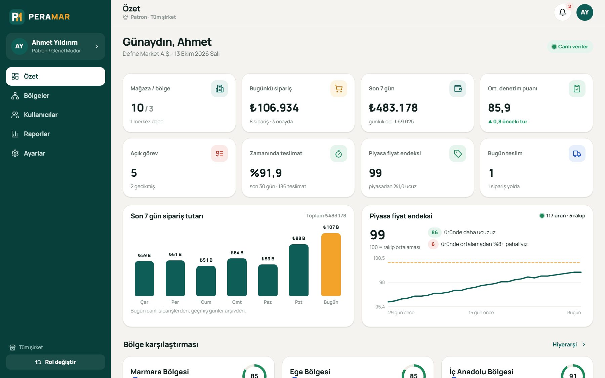
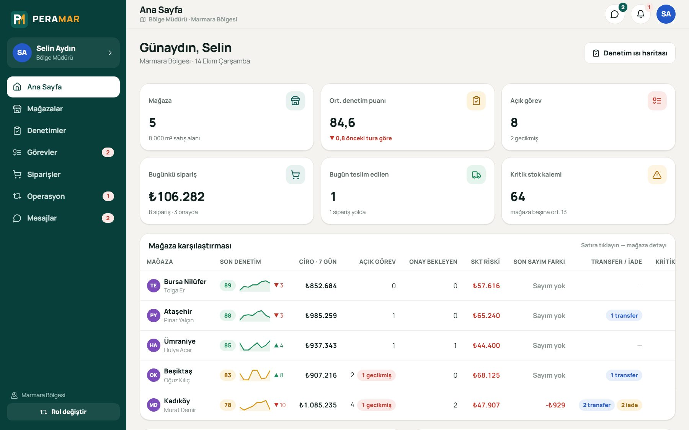
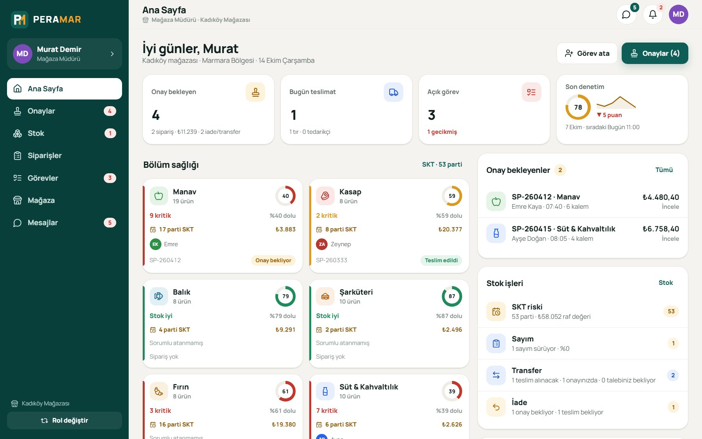
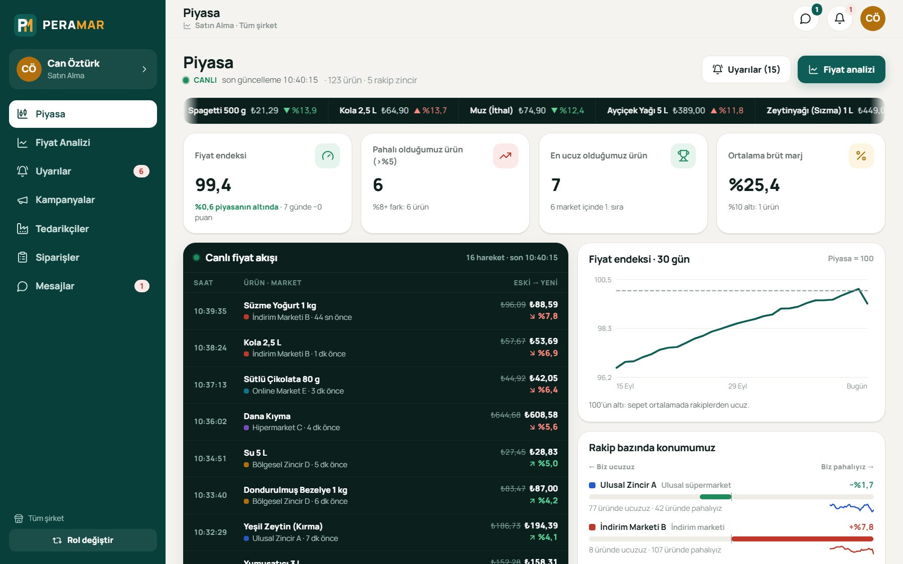
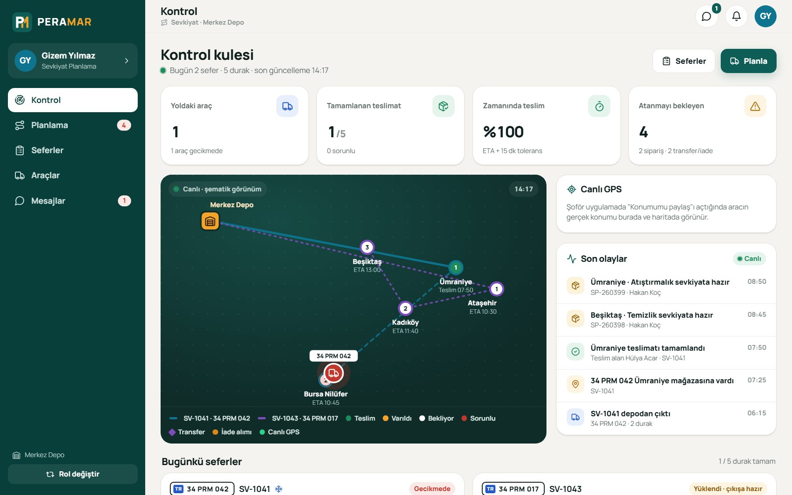
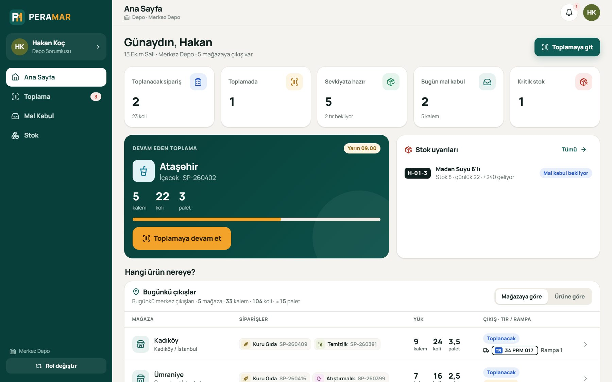
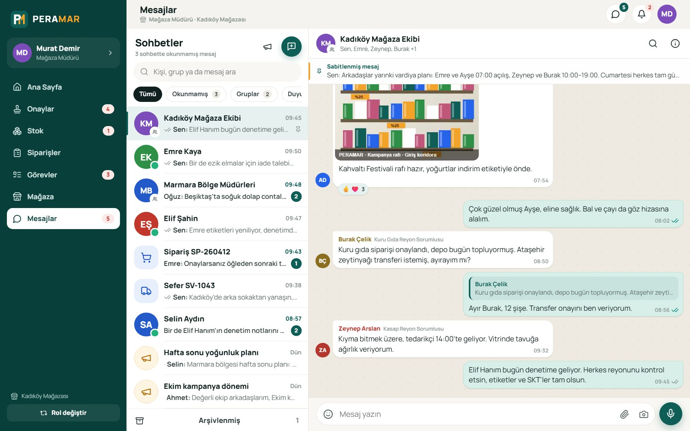
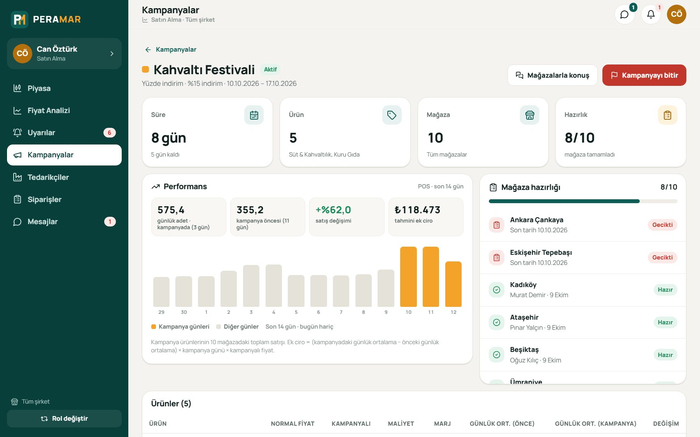
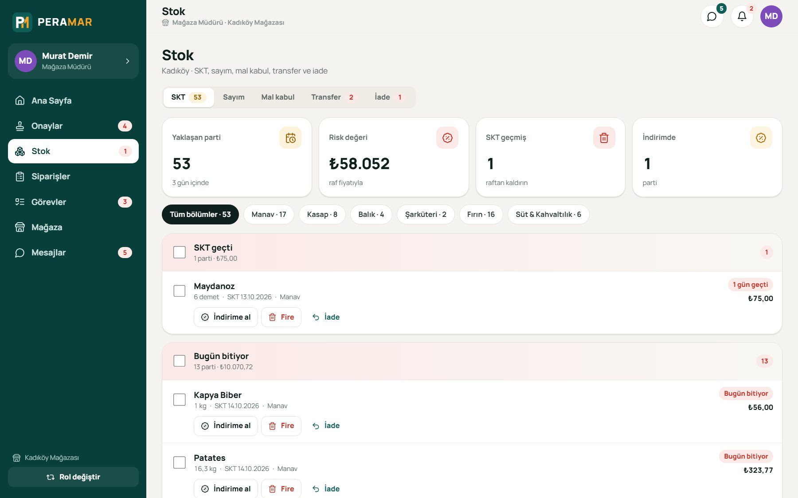
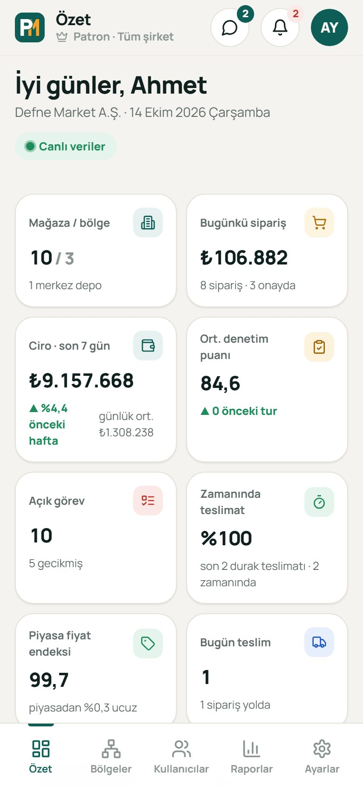
PERAMAR'ı 4 dakikada izleyin.
Tek bağlantıyla açılan otomatik bir tur: bir sipariş reyondan rafa kadar dokuz rolün ekranından geçer. Her adımda ilgili düğme ışıkla gösterilir, isterseniz Türkçe sesli anlatım açılır. Durdurun, geri alın, kendiniz deneyin.
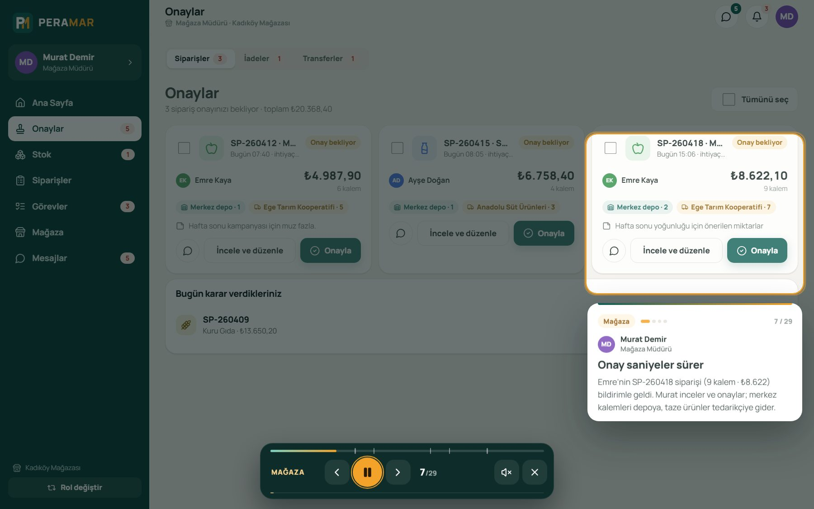
Kim, neyi, ne zaman yaptı; hep belli.
Yetki, kayıt ve kanıt PERAMAR'ın temelinde. Her onay, her teslimat ve her denetim iz bırakır.
Rol bazlı yetki
Her kullanıcı yalnızca rolünün ve atandığı mağaza ile bölümün verisini görür. Fiyat ve ciro gibi hassas bilgiler yetkisiz ekranlara hiç gelmez.
Değişmez kayıt izi
Siparişin her adımı; kim oluşturdu, kim onayladı, kim topladı, kim teslim etti, saatiyle birlikte zaman çizelgesinde durur.
Fotoğraf ve imza kanıtı
Denetimler ve teslimatlar zaman damgalı fotoğraf ve dijital imzayla kapanır. "Gelmedi" tartışması biter.
Merkezi kullanıcı yönetimi
Yeni personel eklemek, rol değiştirmek ya da işten ayrılanın erişimini kapatmak patron ekranından saniyeler sürer.
KVKK gözetilerek tasarım
Kişisel veriler yalnızca gereken kadar toplanır. Yazı tipleri dahil hiçbir öğe üçüncü taraf sunuculardan yüklenmez.
Hızlı ve güvenli giriş
Kullanıcı adı ve şifre ya da destekleyen cihazlarda yüz ve parmak iziyle giriş. Ortak cihazlarda hızlı kullanıcı değişimi.
Dört adımda PERAMAR'a geçiş.
Mevcut düzeninizi bozmadan, mağaza mağaza ilerleyen kontrollü bir geçiş.
Keşif görüşmesi
Mağaza, bölüm, depo ve tır yapınızı birlikte çıkarıyoruz. Onay limitleri ve denetim sorularınızı belirliyoruz.
Kurulum ve veri aktarımı
Ürün kataloğu, tedarikçiler, kullanıcılar ve yetkiler sisteme aktarılır. Kendi logonuz ve renklerinizle.
Ekip eğitimi
Her rol için kısa, uygulamalı eğitim. Ekranlar sade olduğu için reyon görevlisi ilk gün kullanmaya başlar.
Canlıya geçiş ve destek
Önce bir pilot mağaza, ardından tüm zincir. Geçiş boyunca ve sonrasında yanınızdayız.
Aklınıza takılanlar.
Telefon, tablet ve bilgisayarda tarayıcı üzerinden çalışır. Mağaza bilgisayarına ya da personelin telefonuna program kurmak gerekmez; isteyen tek dokunuşla ana ekrana ekleyip uygulama gibi kullanır.
Evet. Örneğin manav sorumlusu yalnızca meyve, sebze ve yeşillik ürünlerini görür ve sipariş verebilir. Şoför yalnızca kendi tırının bugünkü duraklarını görür. Yetkileri patron ya da yetkilendirdiği yönetici belirler.
İkisi de. Her ürün için tedarik yolu tanımlanır. Merkez depodan gelen kalemler depo toplama ve sevkiyat akışına girer, tedarikçiden gelen kalemler doğrudan tedarikçiye iletilir ve mağazada mal kabulle kapanır.
Fiyat verileri lisanslı veri sağlayıcılarından ve kamuya açık kaynaklardan toplanır. Hangi rakiplerin ve hangi ürünlerin izleneceğini siz belirlersiniz.
Evet. Sorular, bölümler, puan ağırlıkları ve hangi sorularda fotoğrafın zorunlu olacağı şablon editöründen düzenlenir. Değişiklik bir sonraki denetim turundan itibaren geçerli olur.
Ürün, stok ve satış verilerinin mevcut sistemlerinizden aktarılması kurulum sürecinde birlikte planlanır. Entegrasyon kapsamı keşif görüşmesinde netleşir.
Hayır. PERAMAR telefonun kamerasını barkod okuyucuya çevirir; EAN-13, EAN-8, Code 128 ve QR kodları okur. Sipariş, sayım, depo toplama ve mal kabulde kullanılır. Ürün etiketleri de uygulamadan yazdırılabilir.
İş yazışmaları için evet. Birebir, grup ve duyuru sohbetlerinin yanında her sipariş, sefer ya da görevin altında yazışılabilir. Sesli mesaj, fotoğraf, konum ve okundu bilgisi vardır; duyurularda kimin okuduğu takip edilir. Konuşmalar şirkette kalır, kimse işi gereği olmayan kişiye yazamaz.
Mal kabulde girilen SKT ile her ürün partisi takip edilir. Tarihi yaklaşanlar reyon sorumlusuna ve müdüre bildirilir; indirime alınır, fireye ya da iadeye gönderilir. Fire, sayım farkı ve hasar TL olarak patronun "Kayıp & fire" panelinde toplanır.
PERAMAR tek mağazalı işletmeden çok bölgeli zincirlere kadar ölçeklenecek şekilde tasarlandı. Bölge, mağaza, bölüm ve tır sayısı sınırlanmaz.
Evet. En kolayı rehberli tur: bağlantıyı açın, tur kendiliğinden ilerlesin. Kendiniz gezmek isterseniz canlı demoda giriş ekranındaki demo hesaplarından birine dokunun ve 9 rolün tamamını gezin. Profil menüsündeki "Rol değiştir" ile roller arasında anında geçebilirsiniz.
Marketinizi PERAMAR ile yönetmeye hazır mısınız?
Formu doldurun, size özel bir tanıtım planlayalım. Ya da beklemeden canlı demoya göz atın.
- Zincirinize özel kurgulanmış tanıtım
- Kendi logonuz ve renklerinizle örnek kurulum
- Pilot mağaza ile risksiz başlangıç
Teşekkürler!
Talebiniz hazırlandı. En kısa sürede sizinle iletişime geçeceğiz.
Bu arada canlı demoyu açın